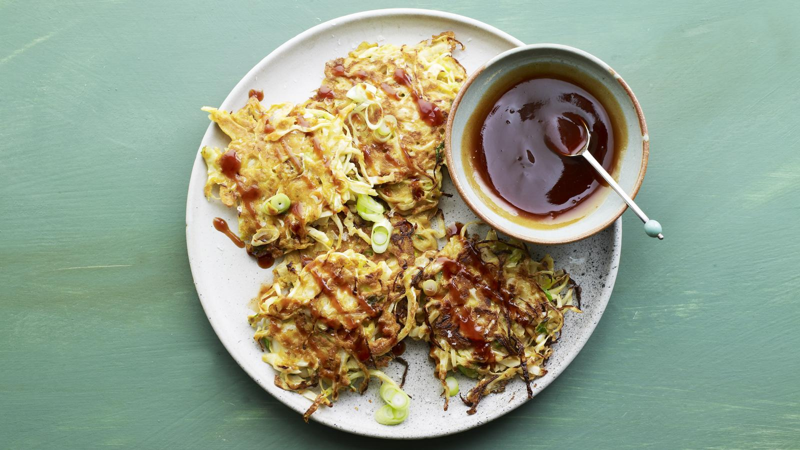

Okonomiyaki

Description
Okonomiyaki are traditional Japanese fritter-like pancakes that are great for using up a head of white cabbage.
Serve with okonomiyaki sauce, Japanese mayonnaise or your favourite hot sauce.
Each serving provides 360 kcal, 17.5g protein, 35g carbohydrates (of which 17.5g sugars),
15.5g fat (of which 3.5g saturates), 5.5g fibre and 2.5g salt.
Ingridients
For the okonomiyaki sauce
- 1½ tbsp tomato ketchup
- ½ tbsp Worcestershire sauce
- 2 tsp runny honey
- 1 tsp dark soy sauce
For the okonomiyaki pancakes
- 3 large free-range eggs
- 3 tbsp plain flour
- ½ tsp sea salt
- ½ tsp dark soy sauce
- ½ tsp toasted sesame oil
- 2 large spring onions, thinly sliced
- 275g/9¾oz white cabbage, shredded sunflower oil
Steps
- For the okonomiyaki sauce, whisk together the tomato ketchup, Worcestershire sauce, honey and dark soy sauce in a small bowl until combined. Set aside.
- To make the okonomiyaki batter, whisk together the eggs, flour, salt, soy sauce and toasted sesame oil until smooth.
- Fold the spring onions and cabbage into the batter until everything is well coated.
- Heat enough oil to just cover the bottom of a large frying pan over a medium–high heat until shimmering. Line a warmed plate with a couple of sheets of kitchen paper.
- Spoon some of the cabbage mixture into the pan into pancake shapes that are about the size of your palm. Press down with the back of the spoon and fry until golden-brown on each side, flipping halfway.
Transfer the pancakes to the kitchen paper to drain.
- Fry in batches until you’ve run out of mixture – you should get about eight pancakes.
- Serve the pancakes drizzled with the okonomiyaki sauce.
Back to Home Page